<script type="text/javascript">
	$(document).ready(function (){
		$('.scroll').jscroll({
			nextSelector: 'a.jscroll-next:last',
	});
	});
	</script>

	<div class="scroll">
<div class="footer">
	<div class="row">
		<div class="large-12 medium-12 small-12 columns">
			<center></center>
			
		</div>
		<div class="large-12 medium-12 small-12 columns">
			<h5>Copyright 2014 All Rights Reserved</h5>
		</div>
	</div>
</div>


			
	</div>

<script>
    $(document).foundation();
</script>
</body>
</html>